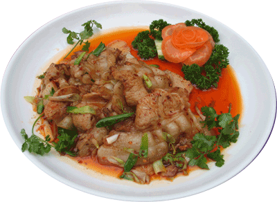

川菜简介

什么叫川菜? 川菜就是两“了”，即“吃了忘不了”。 即使用很普通的料，也做得风味独特，入口生香。 川菜取材广泛，切配精细,菜式众多，烹制讲究，调料丰富，味别多样。 技法上有烹、炸、焖、煎、炒、烧、煸、炝、蒸。 烹饪过程以掌握火候最为关键，以调味最为重要。 即便是一个辣味，也有香辣、麻辣、咸辣、微辣等不同的区别。

什么叫川菜? 川菜就是两“了”，即“吃了忘不了”。 即使用很普通的料，也做得风味独特，入口生香。 川菜取材广泛，切配精细,菜式众多，烹制讲究，调料丰富，味别多样。 技法上有烹、炸、焖、煎、炒、烧、煸、炝、蒸。 烹饪过程以掌握火候最为关键，以调味最为重要。 即便是一个辣味，也有香辣、麻辣、咸辣、微辣等不同的区别。